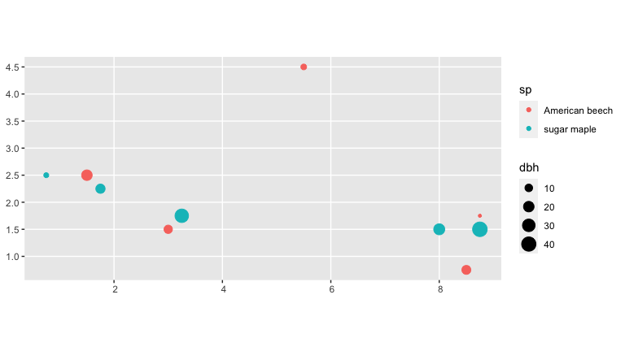
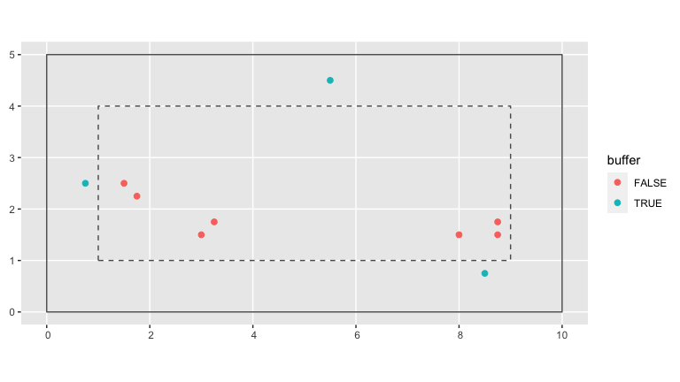
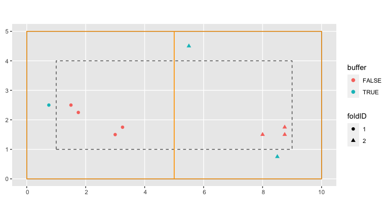
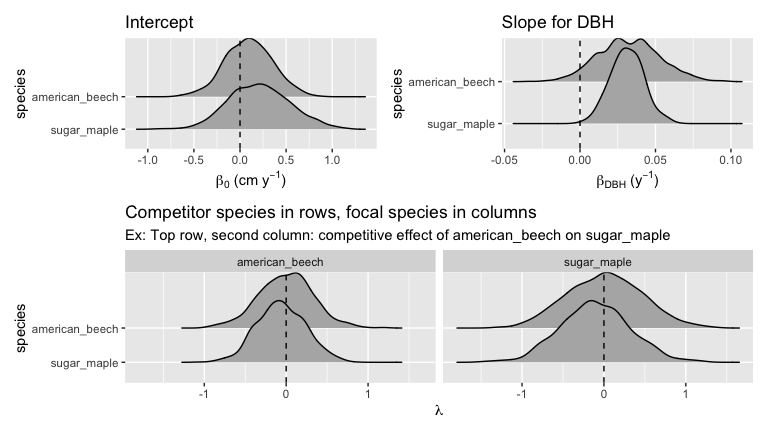

Installation
You can install the released version of forestecology from CRAN with:
install.packages("forestecology")And the development version from GitHub with:
# install.packages("remotes")
remotes::install_github("rudeboybert/forestecology")This package is designed to work for spatially mapped, repeat censused forests plots. The package has commands to fit models of tree growth based on neighborhood competition which can be used to estimate species-specific competition coefficients. The model fits can then be evaluated using a spatial cross-validation scheme to detect possible overfitting. Additionally, these models can test whether the species identity of competitors matters using a permutation test-style shuffling of competitor identity (under the null hypothesis) and subsequently evaluating if model performance changes. See Allen and Kim (2020) A permutation test and spatial cross-validation approach to assess models of interspecific competition between trees for a full description.
Example analysis
We present an example analysis using toy data pre-loaded into the package where we will:
- Compute growth of trees based on census data
- Add spatial information
- Identify all focal and corresponding competitor trees
- Fit model and make predictions
- Run spatial cross-validation
library(tidyverse)
library(forestecology)
library(patchwork)
library(blockCV)
# Resolve conflicting functions
filter <- dplyr::filterCompute growth of trees based on census data
The starting point of our analysis are data from two repeat censuses census_1_ex and census_2_ex. For example, consider the forest census data in census_1_ex.
census_1_ex
#> # A tibble: 10 x 7
#> ID sp gx gy date codes dbh
#> <int> <chr> <dbl> <dbl> <date> <chr> <dbl>
#> 1 1 sugar maple 0.75 2.5 2015-06-01 M 5
#> 2 2 American beech 1.5 2.5 2015-06-01 M 20
#> 3 3 sugar maple 1.75 2.25 2015-06-01 M 15
#> 4 4 American beech 3 1.5 2015-06-01 M 12
#> 5 5 sugar maple 3.25 1.75 2015-06-01 M 35
#> 6 6 American beech 5.5 4.5 2015-06-01 M 6
#> 7 7 sugar maple 8 1.5 2015-06-01 M 22
#> 8 8 American beech 8.5 0.75 2015-06-01 M 14
#> 9 9 sugar maple 8.75 1.5 2015-06-01 M 42
#> 10 10 American beech 8.75 1.75 2015-06-01 M 4We convert the census_1_ex data frame to an object of type sf and then plot using geom_sf().
ggplot() +
geom_sf(
data = census_1_ex %>% sf::st_as_sf(coords = c("gx", "gy")),
aes(col = sp, size = dbh)
)
We first combine data from two repeat censuses into a single growth data frame that has the average annual growth of all trees alive at both censuses that aren’t resprouts at the second census per Allen and Kim (2020).
growth_ex <-
compute_growth(
census_1 = census_1_ex %>%
mutate(sp = to_any_case(sp) %>% factor()),
census_2 = census_2_ex %>%
filter(!str_detect(codes, "R")) %>%
mutate(sp = to_any_case(sp) %>% factor()),
id = "ID"
)Add spatial information
Our growth model assumes that two individual trees compete if they are less than a pre-specified distance comp_dist apart. Furthermore, we define a buffer region of size comp_dist from the boundary of the study region.
# Set competitor distance
comp_dist <- 1
# Add buffer variable to growth data frame
growth_ex <- growth_ex %>%
add_buffer_variable(size = comp_dist, region = study_region_ex)
# Optional: Create sf representation of buffer region
buffer_region <- study_region_ex %>%
compute_buffer_region(size = comp_dist)In the visualization below, the solid line represents the boundary of the study region while the dashed line delimits the buffer region within. All trees outside this buffer region (in red) will be our “focal” trees of interest in our model since we have complete competitor information on all of them. All trees inside this buffer region (in blue) will only be considered as “competitor” trees to “focal” trees.
base_plot <- ggplot() +
geom_sf(data = study_region_ex, fill = "transparent") +
geom_sf(data = buffer_region, fill = "transparent", linetype = "dashed")
base_plot +
geom_sf(data = growth_ex, aes(col = buffer), size = 2)
Next we add information pertaining to our spatial cross-validation scheme. We first manually define the spatial blocks that will act as our cross-validation folds and convert them to an sf object using the sf_polygon() function from the sfheaders package.
fold1 <- rbind(c(0, 0), c(5, 0), c(5, 5), c(0, 5), c(0, 0))
fold2 <- rbind(c(5, 0), c(10, 0), c(10, 5), c(5, 5), c(5, 0))
blocks_ex <- bind_rows(
sf_polygon(fold1),
sf_polygon(fold2)
) %>%
mutate(folds = c(1, 2) %>% factor())Next we assign each tree to the correct folds using the foldID variable of the output returned by the spatialBlock() function from the blockCV package.
SpatialBlock_ex <- blockCV::spatialBlock(
speciesData = growth_ex, k = 2, selection = "systematic", blocks = blocks_ex,
showBlocks = FALSE, verbose = FALSE
)
growth_ex <- growth_ex %>%
mutate(foldID = SpatialBlock_ex$foldID %>% factor())In the visualization below, the spatial blocks that act as our cross-validation folds are delineated in orange. The shape of each point indicates which fold each tree has been assigned to.
base_plot +
geom_sf(data = growth_ex, aes(col = buffer, shape = foldID), size = 2) +
geom_sf(data = blocks_ex, fill = "transparent", col = "orange")
Compute focal versus competitor tree information
Based on our growth data frame, we now explicitly define all “focal” trees and their respective “competitor” trees in a focal_vs_comp data frame. This data frame has rows corresponding to each focal tree, and all information about its competitors are saved in the list-column variable comp. We implemented this nested format using nest() in order to minimize redundancy, given that the same tree can act as a competitor multiple times.
focal_vs_comp_ex <- growth_ex %>%
create_focal_vs_comp(comp_dist, blocks = blocks_ex, id = "ID")
focal_vs_comp_ex
#> # A tibble: 6 x 7
#> focal_ID focal_sp dbh foldID geometry growth comp
#> <dbl> <fct> <dbl> <fct> <POINT> <dbl> <list>
#> 1 2 american_beech 20 1 (1.5 2.5) 0.800 <tibble [2 × 4]>
#> 2 3 sugar_maple 15 1 (1.75 2.25) 1.00 <tibble [1 × 4]>
#> 3 4 american_beech 12 1 (3 1.5) 0.400 <tibble [1 × 4]>
#> 4 5 sugar_maple 35 1 (3.25 1.75) 1.40 <tibble [1 × 4]>
#> 5 7 sugar_maple 22 2 (8 1.5) 0.600 <tibble [3 × 4]>
#> 6 9 sugar_maple 42 2 (8.75 1.5) 1.40 <tibble [3 × 4]>Using unnest() we can fully expand the competitor information saved in the focal_vs_comp data frame. For example, the tree with focal_ID equal to 2 located at (1.5, 2.5) has two competitors within comp_dist distance from it.
focal_vs_comp_ex %>%
unnest(cols = "comp")
#> # A tibble: 11 x 10
#> focal_ID focal_sp dbh foldID geometry growth comp_ID dist
#> <dbl> <fct> <dbl> <fct> <POINT> <dbl> <dbl> <dbl>
#> 1 2 american_beech 20 1 (1.5 2.5) 0.800 1 0.75
#> 2 2 american_beech 20 1 (1.5 2.5) 0.800 3 0.354
#> 3 3 sugar_maple 15 1 (1.75 2.25) 1.00 2 0.354
#> 4 4 american_beech 12 1 (3 1.5) 0.400 5 0.354
#> 5 5 sugar_maple 35 1 (3.25 1.75) 1.40 4 0.354
#> 6 7 sugar_maple 22 2 (8 1.5) 0.600 8 0.901
#> 7 7 sugar_maple 22 2 (8 1.5) 0.600 9 0.75
#> 8 7 sugar_maple 22 2 (8 1.5) 0.600 10 0.791
#> 9 9 sugar_maple 42 2 (8.75 1.5) 1.40 7 0.75
#> 10 9 sugar_maple 42 2 (8.75 1.5) 1.40 8 0.791
#> 11 9 sugar_maple 42 2 (8.75 1.5) 1.40 10 0.25
#> # … with 2 more variables: comp_sp <fct>, comp_basal_area <dbl>Fit model and make predictions
We then fit our competitor growth model as specified in Allen and Kim (2020).
comp_bayes_lm_ex <- focal_vs_comp_ex %>%
comp_bayes_lm(prior_param = NULL)The resulting output is an comp_bayes_lm object containing the posterior distribution of all linear regression parameters, the intercept, the slope for dbh for each species, and a matrix of all species pairs competitive effects on growth. The S3 object class is associated with several methods.
# Print
comp_bayes_lm_ex
#> Bayesian linear regression model parameters with a multivariate Normal
#> likelihood. See ?comp_bayes_lm for details:
#>
#> parameter_type prior posterior
#> 1 Inverse-Gamma on sigma^2 a_0 a_star
#> 2 Inverse-Gamma on sigma^2 b_0 b_star
#> 3 Multivariate t on beta mu_0 mu_star
#> 4 Multivariate t on beta V_0 V_star
#>
#> Model formula:
#> growth ~ sp + dbh + dbh * sp + american_beech * sp + sugar_maple * sp
# Posterior distributions (plots combined with patchwork pkg)
p1 <- autoplot(comp_bayes_lm_ex, type = "intercepts")
p2 <- autoplot(comp_bayes_lm_ex, type = "dbh_slopes")
p3 <- autoplot(comp_bayes_lm_ex, type = "competition")
(p1 | p2) / p3
Furthermore, we can apply a predict() method to the resulting comp_bayes_lm object to obtain fitted/predicted values of this model. We append these growth_hat values to our focal_vs_comp data frame.
focal_vs_comp_ex <- focal_vs_comp_ex %>%
mutate(growth_hat = predict(comp_bayes_lm_ex, newdata = focal_vs_comp_ex))
focal_vs_comp_ex
#> # A tibble: 6 x 8
#> focal_ID focal_sp dbh foldID geometry growth comp
#> <dbl> <fct> <dbl> <fct> <POINT> <dbl> <list>
#> 1 2 american_beech 20 1 (1.5 2.5) 0.800 <tibble [2 × 4]>
#> 2 3 sugar_maple 15 1 (1.75 2.25) 1.00 <tibble [1 × 4]>
#> 3 4 american_beech 12 1 (3 1.5) 0.400 <tibble [1 × 4]>
#> 4 5 sugar_maple 35 1 (3.25 1.75) 1.40 <tibble [1 × 4]>
#> 5 7 sugar_maple 22 2 (8 1.5) 0.600 <tibble [3 × 4]>
#> 6 9 sugar_maple 42 2 (8.75 1.5) 1.40 <tibble [3 × 4]>
#> # … with 1 more variable: growth_hat <dbl>We then compute the root mean squared error (RMSE) of the observed versus fitted growths as a measure of our model’s fit.
focal_vs_comp_ex %>%
rmse(truth = growth, estimate = growth_hat) %>%
pull(.estimate)
#> [1] 0.1900981Run spatial cross-validation
Whereas in our example above we fit our model to the entirety of the data and then generate fitted/predicted growths on this same data, we now apply the same model with spatial cross-validation. All the trees in a given fold will be given a turn as the “test” data while the trees in all remaining folds will be the “training” data. We then fit the model to the training data, but compute fitted/predicted growths for the separate and independent data.
focal_vs_comp_ex <- focal_vs_comp_ex %>%
run_cv(comp_dist = comp_dist, blocks = blocks_ex)Note the increase in RMSE, reflecting the fact that our original estimate of model error was overly optimistic as it did not account for spatial autocorrelation.
focal_vs_comp_ex %>%
rmse(truth = growth, estimate = growth_hat) %>%
pull(.estimate)
#> [1] 0.4068709